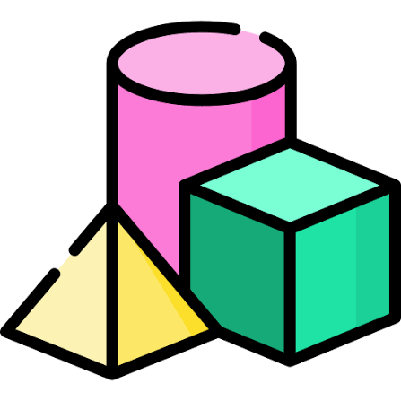

Calculadora científica
Una calculadora es un dispositivo que se utiliza para realizar cálculos aritméticos. Aunque las calculadoras modernas incorporan a menudo un ordenador de propósito general, se diseñan para realizar ciertas operaciones más que para ser flexibles. Por ejemplo, existen calculadoras gráfocas especializadas en campos matemáticos gráficos como la trigonometría y la estadística

Seguir leyendoEn matemáticas, se dice que una magnitud o cantidad es función de otra si el valor de la primera depende del valor de la segunda. Por ejemplo, el área A de un círculo es función de su radio r(el valor del area es proporcional al cuadrado del radio, A=n*r2). Del mismo modo, la duración T de un viaje en tren entre dos ciudades separadas por una distancia d de 150 jm depende de la velocidad v a la que se desplace el tren